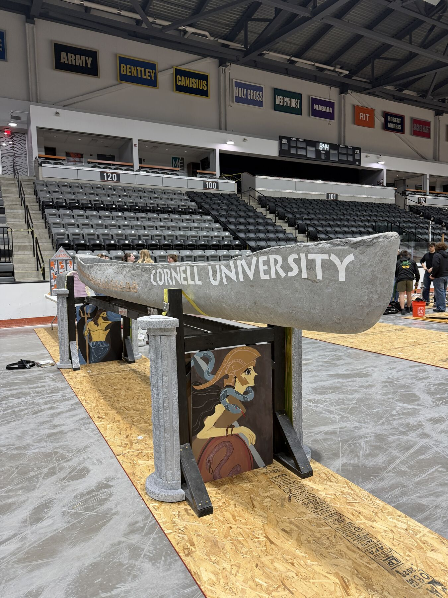
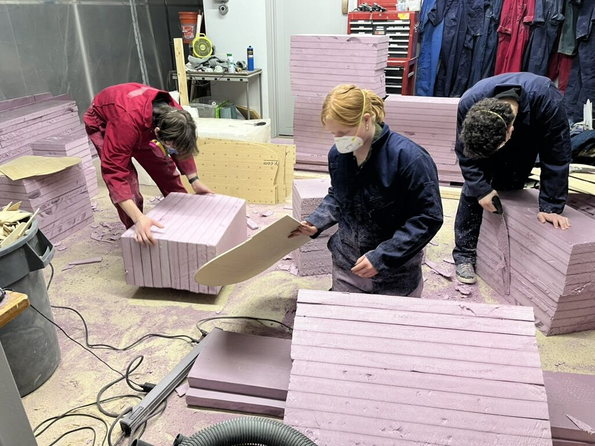
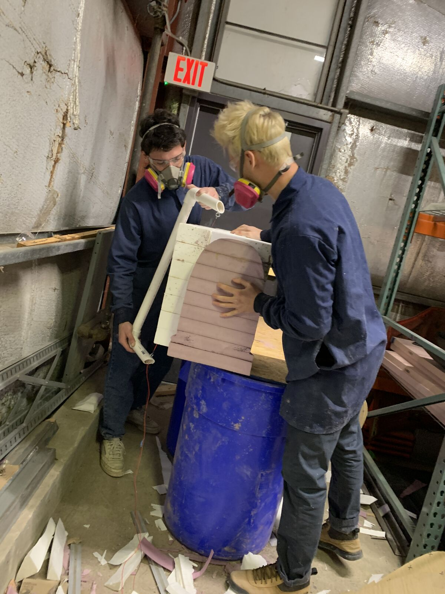
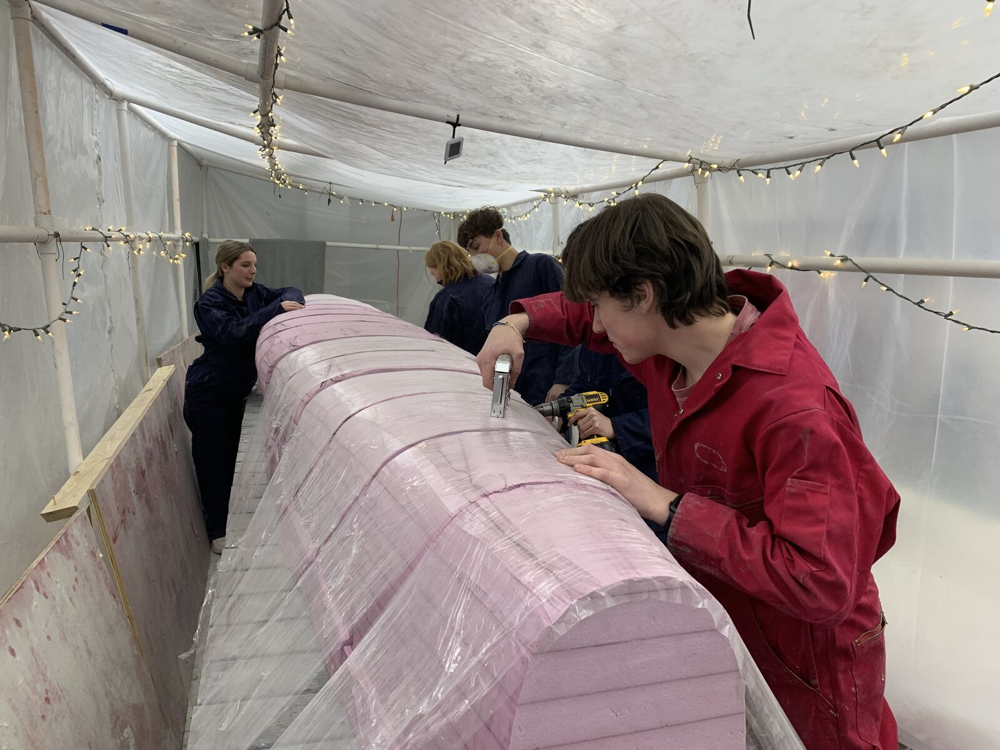

Results
Building the mold in-house took about three fewer weeks and several thousand dollars less than outsourced CNC machining. Dimensional accuracy was slightly lower than a machined mold, and the difference was corrected by hand-sanding. Because the center sections were split for removal, the canoe was demolded without destroying the mold, and most of the foam can be reused.
ARGO's calculated midship freeboard under a four-paddler load was about 7.3 in, above the 6 in requirement, and the FEA result agreed closely. The team competed at the 2026 ASCE Upstate New York Student Symposium at RIT, April 9–11, 2026.

The challenge
ARGO uses a tumblehome hull, in which the sides curve inward above the waterline. The shape improves paddler reach and stability, but it makes the hull wider at its base than at the gunwales, so a one-piece mold cannot be pulled out after casting. In previous seasons, concrete shrinkage during curing meant the mold had to be destroyed to remove it. ARGO was also the largest hull the team had built, and the goal was to avoid the cost of outsourced CNC machining entirely.
| Hull form | Tumblehome |
|---|---|
| Length | 21 ft (252 in) |
| Maximum beam | 32 in |
| Wall thickness | 5/8 in, cast in two layers |
| Reinforcement | SpiderLath fiberglass mesh |
Mold fabrication
- Hull cross-sections were exported from Fusion 360 at 12 in intervals, keeping the offset from the gunwale line to the stern axis so the hull could be cast directly on the mold. A 5/8 in edge was added to each section to serve as a wall-thickness guide.
- Each section was laser cut from 1/4 in plywood, which holds up to the heat of the cutting wire.
- Insulation-foam boards were glued into 12 in blocks. Templates were fixed to both faces of each block and traced with the hot-wire cutter, producing a lofted section between adjacent stations.
- The 32 in end caps were rough-cut from Styrofoam with the hot wire and hand-sanded to final shape. They remain inside the canoe after casting.
- Sections were fixed to the casting table with two diagonal dowels in 3D-printed holders. Gaps were filled with spray foam and sanded smooth, and the mold was wrapped in a stretch-fabric release layer.




Figure 3. Mold fabrication: (a) laser-cut cross-section templates for the foam, (b) assembling the templates onto foam blocks, (c) hot-wire cutting an end cap, (d) foam cross sections assembled on the casting table.

Demolding design
The four center sections, called the "Core Four," have the largest overhang. Each was given an additional T-shaped cut that splits it into three pieces. During demolding the center piece comes out first, which lets the two side pieces move inward and slide free. The remaining sections are then moved toward the center and removed one at a time, so the canoe comes off without destroying the mold.
Casting and curing
ARGO was cast on January 24, 2026, on schedule, with concrete placed by hand at about two batches every ten minutes.
- A 3/8 in first layer was placed starting four feet from the bow and working in both directions, with 3/8 in rubber straps at 12 in intervals as thickness references.
- SpiderLath fiberglass mesh was laid in 24 in sections with 2 in overlaps.
- A 1/4 in second layer was checked with marked gauges in each 4 in square, then floated to reduce sanding.
- The hull was wrapped in plastic inside the hydration tent and held above 85% relative humidity for three weeks.


Figure 6. Applying the fabric release layer (left) and the cast hull wrapped for curing (right).
2026–27 canoe
- CFD in ANSYS Fluent is being used to compare revisions of the roughly 20 ft hull before the geometry is finalized.
- A reusable foam mold process is in development, meant to survive practice casts and the final cast with tighter tolerances and less repair between pours.
- Mix sub-team test results, revised competition rules including a thinner wall, and machining limits are being built into the hull and mold revisions.
- A larger hot-wire cutter and 3D-printed depth gauges for casting are being built.